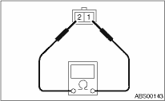
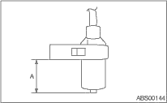
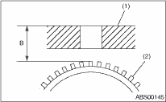
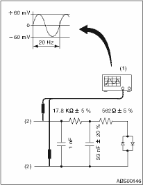

1. Check the pole piece of the ABS wheel speed sensor for foreign particles or damage. If necessary, clean the pole piece or replace the ABS wheel speed sensor.
2. Measure the ABS wheel speed sensor resistance.
If resistance is out of the standard value, replace with a new ABS wheel speed sensor.

|
Terminal No. |
Standard |
|
1 and 2 |
1.25±0.25 kΩ |
NOTE:
Check the ABS wheel speed sensor cable for discontinuity. If necessary, replace with a new part.
1. Measure the distance “A” between the ABS wheel speed sensor surface and sensor pole face.

2. Measure the distance “B” between the surface where the front axle housing meets the ABS wheel speed sensor, and the tone wheel.
NOTE:
Measure so that the gauge touches the apex of the tone wheel teeth.

|
(1) |
Axle housing |
|
(2) |
Tone wheel |
3. Find the gap between the ABS wheel speed sensor pole face and the surface of the tone wheel teeth by entering and calculating the measured values in the formula below.
ABS wheel speed sensor gap = B − A
ABS wheel speed sensor gap standard value:
0.3 — 0.8 mm (0.012 — 0.031 in)
NOTE:
If clearance is out of the standard value, readjust by using the spacer (Part No. 26755AA000).
Output voltage can be checked by the following method. Install a resistor and condenser, then rotate the wheel about 2.75 km/h (2 MPH) or equivalent.
Standard value of output voltage:
0.12 — 1 V at (20 Hz)
NOTE:
Regarding terminal numbers, please refer to item 1. ABS WHEEL SPEED SENSOR. 

|
(1) |
Oscilloscope |
|
(2) |
Terminals |